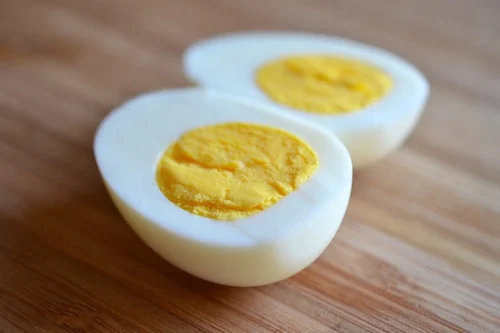

Hard Boiled Eggs
Home

These are going to be the best hard-boiled eggs you've ever made.
Today, we're going to focus on making the simplest, perfect
hard-boiled eggs that you can enjoy with many staple dishes.
We can include them in a hot bowl of ramen, chopped up in a
cobb salad, or simply enjoying them with some salt and mayo.
You'll soon discover that boiled-eggs can quickly steal your
heart.
Ingredients
For our ingredients, we only need a handful of items:
- A medium-sized pot
- 2 large eggs
- Cold water
Steps
- First, place them in the medium-sized pot and
and cover the eggs with cold water by
1 inch (2.54cm).
- Bring the water to a boil over high heat.
- As soon as the water begins to boil, turn off the heat.
- Cover the pot and let the eggs sit for 10-12 minutes.
- Transfer the eggs into a cold bath and leave them there for
another 14 minutes before you peel them.
- Take the eggs one by one and rap them against a plate or counter
and peel the shell away little by little.
- Smacznego!